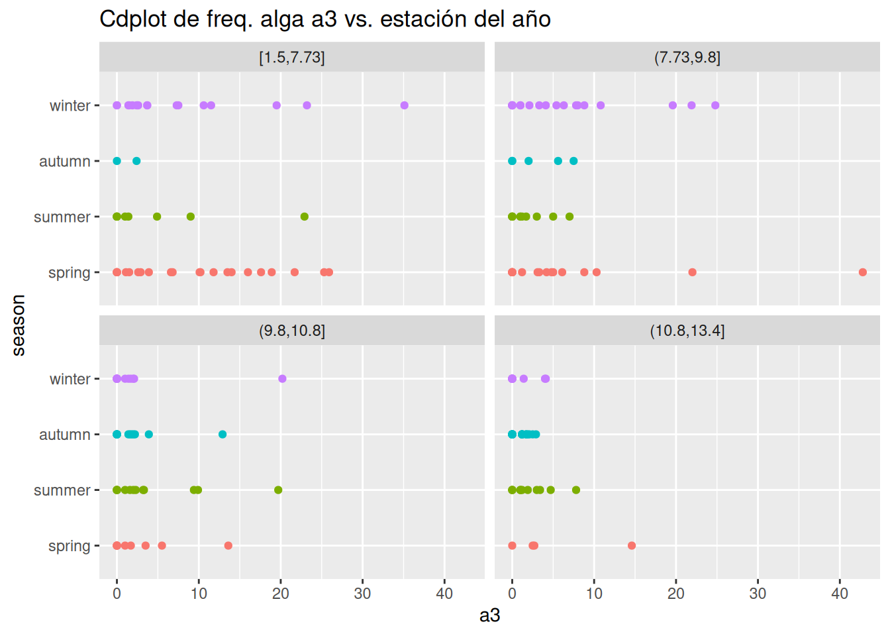
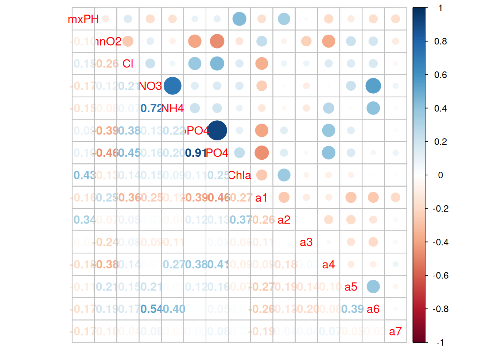

library(devtools) # Comprueba si está instalado
install_github("ltorgo/DMwR2",ref="develop")
install_github("ltorgo/performanceEstimation",ref="develop")5 Modelos clásicos
En este apartado vamos a presentar un caso de estudio completo en el que podamos ver paso a paso el proceso de entrenamiento y validación de varios modelos de aprendizaje máquina supervisado.
Vamos a utilizar un conjunto de datos del paquete DMwR2, que ya no está disponible en CRAN. También usaremos otro paquete llamado performanceEstimation, del mismo autor que el anterior. Ambos están disponibles en GitHub y podemos instalarlos con el siguiente código.
Usaremos los siguientes paquetes.
library(Hmisc)
library(dplyr)
library(ggplot2)
library(forcats)
library(RColorBrewer)
library(corrplot)
library(rpart)
library(rpart.plot)
library(randomForest)
library(performanceEstimation)
library(DMwR2)5.1 Problema: predicción de concentración de algas dañinas en ríos
El caso de estudio se centra en un conjunto de datos recogidos para estudiar el problema de la proliferación de algas perniciosas en algunos ríos europeos. Las poblaciones de estas algas pueden crecer desmesuradamente en ciertos periodos del año y crean un importante problema para los ecosistemas locales. El caso está desarrollado en (Torgo, 2016), y todo el código de ejemplo está disponible en http://ltorgo.github.io/DMwR2/Ralgae.html.
Concretamente, se miden varias propiedades químicas del agua (covariables), junto con la frecuencia de aparición de siete especies de algas potencialmente dañinas. También se registran variables con información adicional, como el periodo del año en el que se recogió la muestra, el tamaño del río y la velocidad de sus aguas.
El objetivo del caso de estudio es doble:
Por una parte, intentar abaratar costes de monitorización, creando un modelo que permita guiar sistemas automáticos de recolección de información que puedan alertar sobre la posible creación de situaciones de riesgo en ecosistemas locales.
Por otra parte, también se pretende entender mejor los factores que puedan estar influyendo en la aparición de estas algas perniciosas, es decir, identificar si estas frecuencias están correladas de alguna forma con las características químicas descriptivas de la muestra tomada o con alguna otra variable (tipo del río, época del año en la que se tomó la muestra, etc.).
5.2 Datasets
ID: DMwR2::algae.
Los datos para este estudio provienen de la competición internacional de análisis de datos COIL 1999, y están disponibles a través de diferentes fuentes, incluyendo el UCI Machine Learning Repository.
El conjunto de datos contiene en total 200 muestras tomadas de diferentes ríos europeos. Los datos pueden cargarse directamente desde el paquete DMwR2 de la siguiente forma:
data(algae, package="DMwR2")
algae# A tibble: 200 × 18
season size speed mxPH mnO2 Cl NO3 NH4 oPO4 PO4 Chla a1
<fct> <fct> <fct> <dbl> <dbl> <dbl> <dbl> <dbl> <dbl> <dbl> <dbl> <dbl>
1 winter small medium 8 9.8 60.8 6.24 578 105 170 50 0
2 spring small medium 8.35 8 57.8 1.29 370 429. 559. 1.3 1.4
3 autumn small medium 8.1 11.4 40.0 5.33 347. 126. 187. 15.6 3.3
4 spring small medium 8.07 4.8 77.4 2.30 98.2 61.2 139. 1.4 3.1
5 autumn small medium 8.06 9 55.4 10.4 234. 58.2 97.6 10.5 9.2
6 winter small high 8.25 13.1 65.8 9.25 430 18.2 56.7 28.4 15.1
7 summer small high 8.15 10.3 73.2 1.54 110 61.2 112. 3.2 2.4
8 autumn small high 8.05 10.6 59.1 4.99 206. 44.7 77.4 6.9 18.2
9 winter small medium 8.7 3.4 22.0 0.886 103. 36.3 71 5.54 25.4
10 winter small high 7.93 9.9 8 1.39 5.8 27.2 46.6 0.8 17
# ℹ 190 more rows
# ℹ 6 more variables: a2 <dbl>, a3 <dbl>, a4 <dbl>, a5 <dbl>, a6 <dbl>,
# a7 <dbl>Cada observación (fila) contiene información sobre 11 variables, tres de las cuales son categóricas y el resto cuantitativas:
season: Estación del año en la que se tomó la muestra.size: Tamaño del río.speed: Velocidad de las aguas del río.mxPH: Máximo valor del PH del río.mnO2: Mínimo valor de oxígeno del río.Cl: Valor medio de cloro.NO3: Valor medio de nitratos.NH4: Valor medio de amonio.oPO4: Valor medio de ortofosfato.PO4: Valor medio de total de fosfatos.Chla: Valor medio de clorofila.a1hastaa7: Frecuencia de aparición de cada uno de los 7 tipos de algas dañinas analizados en la muestra de agua tomada.
Adicionalmente, existe otro data set en el mismo paquete, llamado test.algae, que contiene otras 140 observaciones adicionales, conteniendo las mismas variables descriptivas, pero que no contiene las columnas correspondientes a los valores de frecuencia de cada especie de algas.
En este contexto, podemos usar algae como un conjunto de datos de entrenamiento para nuestro modelo, mientra que test.algae se puede usar como conjunto de datos de test. Finalmente, el dataset algae.sols contiene los valores de las 7 columnas restantes con las frecuencias de aparición de cada especie de algas para cada fila del testing set test.alage. De este modo, podemos evaluar el modelo propuesto.
5.3 Descripción y preparación de datos
5.3.1 Análisis descriptivo
Un primer resumen descriptivo de las variables implicadas en el análisis es:
describe(algae)algae
18 Variables 200 Observations
--------------------------------------------------------------------------------
season
n missing distinct
200 0 4
Value autumn spring summer winter
Frequency 40 53 45 62
Proportion 0.200 0.265 0.225 0.310
--------------------------------------------------------------------------------
size
n missing distinct
200 0 3
Value large medium small
Frequency 45 84 71
Proportion 0.225 0.420 0.355
--------------------------------------------------------------------------------
speed
n missing distinct
200 0 3
Value high low medium
Frequency 84 33 83
Proportion 0.420 0.165 0.415
--------------------------------------------------------------------------------
mxPH
n missing distinct Info Mean pMedian Gmd .05
199 1 72 0.998 8.012 8.05 0.6471 7.081
.10 .25 .50 .75 .90 .95
7.340 7.700 8.060 8.400 8.700 8.873
lowest : 5.6 5.7 6.4 6.5 6.6 , highest: 9 9.06 9.1 9.5 9.7
--------------------------------------------------------------------------------
mnO2
n missing distinct Info Mean pMedian Gmd .05
198 2 88 1 9.118 9.35 2.629 4.485
.10 .25 .50 .75 .90 .95
5.770 7.725 9.800 10.800 11.700 11.815
lowest : 1.5 1.8 3.2 3.3 3.4 , highest: 12.5 12.6 12.9 13.1 13.4
--------------------------------------------------------------------------------
Cl
n missing distinct Info Mean pMedian Gmd .05
190 10 178 1 43.64 36.38 43.78 3.061
.10 .25 .50 .75 .90 .95
4.970 10.981 32.730 57.823 88.600 130.087
lowest : 0.222 0.8 1.17 1.45 1.549
highest: 173.75 187.183 194.75 208.364 391.5
--------------------------------------------------------------------------------
NO3
n missing distinct Info Mean pMedian Gmd .05
198 2 192 1 3.282 2.867 2.884 0.4023
.10 .25 .50 .75 .90 .95
0.6912 1.2960 2.6750 4.4463 6.1916 7.9369
lowest : 0.05 0.102 0.13 0.23 0.267 , highest: 9.248 9.715 9.773 10.416 45.65
--------------------------------------------------------------------------------
NH4
n missing distinct Info Mean pMedian Gmd .05
198 2 179 1 501.3 131 816.2 10.00
.10 .25 .50 .75 .90 .95
15.00 38.33 103.17 226.95 805.33 1922.87
lowest : 5 5.8 8 10 10.5
highest: 4073.33 5738.33 6400 8777.6 24064
--------------------------------------------------------------------------------
oPO4
n missing distinct Info Mean pMedian Gmd .05
198 2 173 1 73.59 52.77 85.46 2.00
.10 .25 .50 .75 .90 .95
3.94 15.70 40.15 99.33 193.21 248.34
lowest : 1 1.25 1.333 1.625 1.8
highest: 346.167 412.333 428.75 467.5 564.6
--------------------------------------------------------------------------------
PO4
n missing distinct Info Mean pMedian Gmd .05
198 2 189 1 137.9 125 133.9 6.455
.10 .25 .50 .75 .90 .95
11.350 41.375 103.285 213.750 286.100 345.650
lowest : 1 2.5 3 4 6
highest: 558.75 586 607.167 624.733 771.6
--------------------------------------------------------------------------------
Chla
n missing distinct Info Mean pMedian Gmd .05
188 12 131 1 13.97 9.35 17.93 0.500
.10 .25 .50 .75 .90 .95
0.800 2.000 5.475 18.308 31.817 61.733
lowest : 0.2 0.3 0.4 0.5 0.6
highest: 88.255 92.667 93.683 98.817 110.456
--------------------------------------------------------------------------------
a1
n missing distinct Info Mean pMedian Gmd .05
200 0 121 0.994 16.92 12.45 21.52 0.00
.10 .25 .50 .75 .90 .95
0.00 1.50 6.95 24.80 50.72 64.33
lowest : 0 1.1 1.2 1.4 1.5 , highest: 75.8 81.9 82.7 86.6 89.8
--------------------------------------------------------------------------------
a2
n missing distinct Info Mean pMedian Gmd .05
200 0 89 0.951 7.458 5.25 10.19 0.00
.10 .25 .50 .75 .90 .95
0.00 0.00 3.00 11.38 21.50 28.38
lowest : 0 1 1.2 1.4 1.5 , highest: 40.7 40.9 41 53.6 72.6
--------------------------------------------------------------------------------
a3
n missing distinct Info Mean pMedian Gmd .05
200 0 79 0.949 4.309 2.4 6.131 0.000
.10 .25 .50 .75 .90 .95
0.000 0.000 1.550 4.925 13.510 20.275
lowest : 0 1 1.1 1.2 1.4 , highest: 24.8 25.3 25.9 35.1 42.8
--------------------------------------------------------------------------------
a4
n missing distinct Info Mean pMedian Gmd .05
200 0 50 0.838 1.992 1.1 3.032 0.000
.10 .25 .50 .75 .90 .95
0.000 0.000 0.000 2.400 5.000 7.605
lowest : 0 1 1.1 1.2 1.3 , highest: 11.5 12.7 13.4 28.8 44.6
--------------------------------------------------------------------------------
a5
n missing distinct Info Mean pMedian Gmd .05
200 0 81 0.938 5.064 3.7 6.923 0.00
.10 .25 .50 .75 .90 .95
0.00 0.00 1.90 7.50 14.91 20.04
lowest : 0 1 1.1 1.2 1.4 , highest: 28.8 34.2 34.3 35.6 44.4
--------------------------------------------------------------------------------
a6
n missing distinct Info Mean pMedian Gmd .05
200 0 76 0.847 5.964 2.95 9.323 0.000
.10 .25 .50 .75 .90 .95
0.000 0.000 0.000 6.925 17.110 31.815
lowest : 0 1 1.2 1.4 1.5 , highest: 42.7 49.4 52.5 64.6 77.6
--------------------------------------------------------------------------------
a7
n missing distinct Info Mean pMedian Gmd .05
200 0 51 0.882 2.496 1.2 3.817 0.00
.10 .25 .50 .75 .90 .95
0.00 0.00 1.00 2.40 6.10 10.88
lowest : 0 1 1.1 1.2 1.4 , highest: 22.1 25.6 30.1 31.2 31.6
--------------------------------------------------------------------------------También podemos obtener varios gráficos que permiten hacernos una idea de la posible correlación entre algunas de las variables de nuestro conjunto de datos. Estos ejemplos los podemos encontrar en el epígrafe “Data Visualization and Summarization” de la página que contiene el código original para el caso de estudio.
Particularmente importantes son los comandos para organizar las etiquetas de las variables categóricas siguiendo un orden en particular:
algae <- algae |>
mutate(size=fct_relevel(size,c("small","medium","large")),
speed=fct_relevel(speed,c("low","medium","high")),
season=fct_relevel(season,c("spring","summer","autumn","winter")))Donde usamos la biblioteca forcats, de reciente creación y parte del metapaquete tidyverse (con paquetes asociados al concepto de Tidy Data promulgado por H. Wickham). Este paquete contiene funciones muy útiles para operar con variables categóricas en el contexto de tidy data 1.
También es interesante representar el valor de la concentración de algas en función de alguna de las variables categóricas, de forma que podamos explorar posibles correlaciones:
data2graph <- filter(algae,!is.na(mnO2)) |>
mutate(minO2=cut(mnO2, quantile(mnO2,c(0,0.25,.5,.75,1)), include.lowest=TRUE))
ggplot(data2graph,aes(x=a3,y=season, color=season)) + geom_point() +
facet_wrap(~ minO2) +
guides(color="none") +
ggtitle("Cdplot de freq. alga a3 vs. estación del año")

library(corrplot)
cm <- cor(algae[,4:18], use="complete.obs")
corrplot(cm, type="upper", tl.pos="d")
corrplot(cm, add=TRUE, type="lower",method="number",
diag=FALSE, tl.pos="n", cl.pos="n")

5.3.2 Imputación de datos faltantes
Las siguientes secciones del ejemplo muestran código paso a paso para implementar algunas de las técnicas de imputación que hemos visto en este documento. A veces encontraremos funciones de utilidad que el autor del paquete ha creado para automatizar métodos de imputación avanzados, por ejemplo knnImputation para imputación de valores faltantes utilizando información de los \(k\) vecinos más próximos a un punto dado.
5.4 Ajuste de modelos/algoritmos
En las siguientes secciones, el ejemplo continua desarrollando varios tipos de modelos para los datos disponibles:
- Un modelo de predicción basado en regresión lineal múltiple.
- Un modelo orientado a inferencia, creando árboles de regresión.
- Un algoritmo de ensamblado de modelos, Random Forests.
5.4.1 Regresión lineal múltiple
Para este caso, en primer lugar debemos de rellenar los datos faltantes con algún método de imputación de datos. Aquí se utiliza el método de fijarnos en las obseraciones del dataset de entrenamiento que son similares a las que contienen datos faltantes para rellenar los valores desconocidos.
algae <- algae[-manyNAs(algae), ]
clean.algae <- knnImputation(algae, k = 10)Comenzamos por ajustar un modelo saturado, es decir, con todas las posibles variables que se han observado, para ir simplificándolo paulatinamente.
lm_a1 <- lm(a1 ~ ., data = clean.algae[, 1:12])
summary(lm_a1)
Call:
lm(formula = a1 ~ ., data = clean.algae[, 1:12])
Residuals:
Min 1Q Median 3Q Max
-37.692 -11.894 -2.531 7.359 62.178
Coefficients:
Estimate Std. Error t value Pr(>|t|)
(Intercept) 60.380064 21.919304 2.755 0.00647 **
seasonsummer -2.985251 3.742399 -0.798 0.42609
seasonautumn -3.707641 4.135847 -0.896 0.37119
seasonwinter -0.010954 3.394378 -0.003 0.99743
sizemedium -6.401875 3.447182 -1.857 0.06491 .
sizelarge -9.675740 4.175134 -2.317 0.02159 *
speedmedium -3.701776 4.107879 -0.901 0.36870
speedhigh -3.958606 4.701947 -0.842 0.40094
mxPH -3.596932 2.704224 -1.330 0.18514
mnO2 1.053401 0.704865 1.494 0.13678
Cl -0.040892 0.033645 -1.215 0.22578
NO3 -1.510771 0.551190 -2.741 0.00674 **
NH4 0.001632 0.001003 1.628 0.10533
oPO4 -0.005208 0.039867 -0.131 0.89620
PO4 -0.052335 0.030742 -1.702 0.09039 .
Chla -0.088703 0.079962 -1.109 0.26876
---
Signif. codes: 0 '***' 0.001 '**' 0.01 '*' 0.05 '.' 0.1 ' ' 1
Residual standard error: 17.64 on 182 degrees of freedom
Multiple R-squared: 0.3736, Adjusted R-squared: 0.3219
F-statistic: 7.236 on 15 and 182 DF, p-value: 2.314e-12Después, se puede utilizar un análisis ANOVA para efectuar un análisis secuencial de la construcción del modelo, viendo cómo se reduce el RSS (error total) conforme añadimos términos a la fórmula en cada paso.
anova(lm_a1)Analysis of Variance Table
Response: a1
Df Sum Sq Mean Sq F value Pr(>F)
season 3 85 28.2 0.0906 0.9651608
size 2 11401 5700.7 18.3213 5.632e-08 ***
speed 2 3934 1967.2 6.3222 0.0022155 **
mxPH 1 1313 1312.8 4.2193 0.0413968 *
mnO2 1 2297 2296.5 7.3807 0.0072288 **
Cl 1 4361 4360.7 14.0147 0.0002431 ***
NO3 1 3409 3409.3 10.9569 0.0011244 **
NH4 1 403 403.4 1.2965 0.2563459
oPO4 1 4772 4772.1 15.3367 0.0001271 ***
PO4 1 1413 1413.2 4.5418 0.0344180 *
Chla 1 383 382.9 1.2306 0.2687586
Residuals 182 56630 311.2
---
Signif. codes: 0 '***' 0.001 '**' 0.01 '*' 0.05 '.' 0.1 ' ' 1season es la variable que menos contribuye a reducir el error total, así que la eliminamos.
lm2_a1 <- update(lm_a1, . ~ . - season)
summary(lm2_a1)
Call:
lm(formula = a1 ~ size + speed + mxPH + mnO2 + Cl + NO3 + NH4 +
oPO4 + PO4 + Chla, data = clean.algae[, 1:12])
Residuals:
Min 1Q Median 3Q Max
-36.466 -11.774 -2.987 7.428 63.708
Coefficients:
Estimate Std. Error t value Pr(>|t|)
(Intercept) 5.832e+01 2.167e+01 2.691 0.00778 **
sizemedium -6.951e+00 3.390e+00 -2.051 0.04172 *
sizelarge -1.027e+01 4.117e+00 -2.495 0.01346 *
speedmedium -3.380e+00 4.077e+00 -0.829 0.40821
speedhigh -3.094e+00 4.607e+00 -0.672 0.50271
mxPH -3.267e+00 2.658e+00 -1.229 0.22065
mnO2 8.022e-01 6.587e-01 1.218 0.22486
Cl -3.892e-02 3.337e-02 -1.166 0.24501
NO3 -1.532e+00 5.475e-01 -2.798 0.00568 **
NH4 1.576e-03 9.947e-04 1.585 0.11475
oPO4 -6.010e-03 3.949e-02 -0.152 0.87921
PO4 -5.106e-02 3.051e-02 -1.674 0.09586 .
Chla -8.489e-02 7.942e-02 -1.069 0.28653
---
Signif. codes: 0 '***' 0.001 '**' 0.01 '*' 0.05 '.' 0.1 ' ' 1
Residual standard error: 17.57 on 185 degrees of freedom
Multiple R-squared: 0.3686, Adjusted R-squared: 0.3276
F-statistic: 9 on 12 and 185 DF, p-value: 1.668e-13Volvemos a usar ANOVA, pero ahora para comprobar la mejora entre los dos modelos.
anova(lm_a1, lm2_a1)Analysis of Variance Table
Model 1: a1 ~ season + size + speed + mxPH + mnO2 + Cl + NO3 + NH4 + oPO4 +
PO4 + Chla
Model 2: a1 ~ size + speed + mxPH + mnO2 + Cl + NO3 + NH4 + oPO4 + PO4 +
Chla
Res.Df RSS Df Sum of Sq F Pr(>F)
1 182 56630
2 185 57079 -3 -449.02 0.481 0.6959La función step() permite realizar una eliminación secuencial hacia atras (backward elimination) para simplificar el modelo, usando en cada paso el Akaike Information Criterion (AIC) para identificar la variable candidata a ser eliminada.
Start: AIC=1151.89
a1 ~ season + size + speed + mxPH + mnO2 + Cl + NO3 + NH4 + oPO4 +
PO4 + Chla
Df Sum of Sq RSS AIC
- season 3 449.02 57079 1147.5
- speed 2 274.12 56904 1148.8
- oPO4 1 5.31 56635 1149.9
- Chla 1 382.90 57013 1151.2
- Cl 1 459.64 57090 1151.5
- mxPH 1 550.50 57180 1151.8
<none> 56630 1151.9
- mnO2 1 694.94 57325 1152.3
- NH4 1 824.31 57454 1152.8
- PO4 1 901.78 57532 1153.0
- size 2 1855.68 58486 1154.3
- NO3 1 2337.60 58968 1157.9
Step: AIC=1147.46
a1 ~ size + speed + mxPH + mnO2 + Cl + NO3 + NH4 + oPO4 + PO4 +
Chla
Df Sum of Sq RSS AIC
- speed 2 214.41 57293 1144.2
- oPO4 1 7.15 57086 1145.5
- Chla 1 352.48 57431 1146.7
- Cl 1 419.66 57499 1146.9
- mnO2 1 457.55 57537 1147.0
- mxPH 1 465.99 57545 1147.1
<none> 57079 1147.5
- NH4 1 774.78 57854 1148.1
- PO4 1 864.40 57943 1148.4
- size 2 2177.14 59256 1150.9
- NO3 1 2416.12 59495 1153.7
Step: AIC=1144.2
a1 ~ size + mxPH + mnO2 + Cl + NO3 + NH4 + oPO4 + PO4 + Chla
Df Sum of Sq RSS AIC
- oPO4 1 15.75 57309 1142.2
- Chla 1 227.71 57521 1143.0
- mnO2 1 413.56 57707 1143.6
- mxPH 1 480.09 57773 1143.8
- Cl 1 489.31 57783 1143.9
<none> 57293 1144.2
- NH4 1 718.17 58012 1144.7
- PO4 1 810.82 58104 1145.0
- size 2 2058.91 59352 1147.2
- NO3 1 2373.68 59667 1150.2
Step: AIC=1142.25
a1 ~ size + mxPH + mnO2 + Cl + NO3 + NH4 + PO4 + Chla
Df Sum of Sq RSS AIC
- Chla 1 212.9 57522 1141.0
- mnO2 1 402.6 57712 1141.6
- Cl 1 487.1 57796 1141.9
- mxPH 1 516.3 57825 1142.0
<none> 57309 1142.2
- NH4 1 702.9 58012 1142.7
- size 2 2049.1 59358 1145.2
- NO3 1 2364.8 59674 1148.3
- PO4 1 5802.7 63112 1159.3
Step: AIC=1140.99
a1 ~ size + mxPH + mnO2 + Cl + NO3 + NH4 + PO4
Df Sum of Sq RSS AIC
- mnO2 1 434.9 57957 1140.5
- Cl 1 452.4 57974 1140.5
<none> 57522 1141.0
- NH4 1 745.8 58268 1141.5
- mxPH 1 834.5 58357 1141.8
- size 2 2217.8 59740 1144.5
- NO3 1 2663.9 60186 1148.0
- PO4 1 6296.4 63818 1159.5
Step: AIC=1140.48
a1 ~ size + mxPH + Cl + NO3 + NH4 + PO4
Df Sum of Sq RSS AIC
- NH4 1 530.2 58487 1140.3
<none> 57957 1140.5
- Cl 1 601.4 58558 1140.5
- mxPH 1 818.8 58776 1141.3
- size 2 2480.4 60437 1144.8
- NO3 1 2248.6 60206 1146.0
- PO4 1 9079.2 67036 1167.3
Step: AIC=1140.28
a1 ~ size + mxPH + Cl + NO3 + PO4
Df Sum of Sq RSS AIC
<none> 58487 1140.3
- mxPH 1 782.6 59270 1140.9
- Cl 1 855.1 59342 1141.2
- NO3 1 1985.7 60473 1144.9
- size 2 2667.0 61154 1145.1
- PO4 1 8557.9 67045 1165.3Inspeccionamos el modelo final.
summary(final_lm)
Call:
lm(formula = a1 ~ size + mxPH + Cl + NO3 + PO4, data = clean.algae[,
1:12])
Residuals:
Min 1Q Median 3Q Max
-28.876 -12.707 -3.718 8.413 62.910
Coefficients:
Estimate Std. Error t value Pr(>|t|)
(Intercept) 67.66988 19.18518 3.527 0.000526 ***
sizemedium -7.60277 3.14190 -2.420 0.016466 *
sizelarge -10.40755 3.81939 -2.725 0.007029 **
mxPH -3.96549 2.48058 -1.599 0.111560
Cl -0.05289 0.03165 -1.671 0.096337 .
NO3 -0.89491 0.35143 -2.547 0.011669 *
PO4 -0.05906 0.01117 -5.287 3.39e-07 ***
---
Signif. codes: 0 '***' 0.001 '**' 0.01 '*' 0.05 '.' 0.1 ' ' 1
Residual standard error: 17.5 on 191 degrees of freedom
Multiple R-squared: 0.353, Adjusted R-squared: 0.3327
F-statistic: 17.37 on 6 and 191 DF, p-value: 5.299e-16Observamos que el \(R_{adj}^2\) es tan sólo \(0.3324\), un resultado cuanto menos demasiado modesto. Entre otras posibles causas, esto puede indicar que los presupuestos de linealidad que exige este modelo tan sencillo no son aplicables a este problema.
5.4.2 Árboles de regresión
En el caso del modelo orientado a inferencia estadística, la construcción se centra en la variable de salida a1.
data(algae, package="DMwR2")
algae <- algae[-manyNAs(algae), ]
rt_a1 <- rpart(a1 ~ ., data = algae[, 1:12])
rt_a1n= 198
node), split, n, deviance, yval
* denotes terminal node
1) root 198 90401.290 16.996460
2) PO4>=43.818 147 31279.120 8.979592
4) Cl>=7.8065 140 21622.830 7.492857
8) oPO4>=51.118 84 3441.149 3.846429 *
9) oPO4< 51.118 56 15389.430 12.962500
18) mnO2>=10.05 24 1248.673 6.716667 *
19) mnO2< 10.05 32 12502.320 17.646870
38) NO3>=3.1875 9 257.080 7.866667 *
39) NO3< 3.1875 23 11047.500 21.473910
78) mnO2< 8 13 2919.549 13.807690 *
79) mnO2>=8 10 6370.704 31.440000 *
5) Cl< 7.8065 7 3157.769 38.714290 *
3) PO4< 43.818 51 22442.760 40.103920
6) mxPH< 7.87 28 11452.770 33.450000
12) mxPH>=7.045 18 5146.169 26.394440 *
13) mxPH< 7.045 10 3797.645 46.150000 *
7) mxPH>=7.87 23 8241.110 48.204350
14) PO4>=15.177 12 3047.517 38.183330 *
15) PO4< 15.177 11 2673.945 59.136360 *# summary(rt_a1) # Produce mucha información# Función rpart.plot::prp
prp(rt_a1, extra=101, box.col="orange", split.box.col="grey")
algae.
Partiendo de este árbol complejo y profundo podemos simplificar el modelo podándolo mediante el criterio de cost complexity, implementado en el paquete rpart. El método de poda intenta seguir una solución de compromiso entre la capacidad predictiva del modelo y y el tamaño del árbol. Utilizando este criterio, R puede calcular subconjuntos del árbol original estimando su capacidad predictiva. Esta información está disponible mediante la función printcp().
printcp(rt_a1)
Regression tree:
rpart(formula = a1 ~ ., data = algae[, 1:12])
Variables actually used in tree construction:
[1] Cl mnO2 mxPH NO3 oPO4 PO4
Root node error: 90401/198 = 456.57
n= 198
CP nsplit rel error xerror xstd
1 0.405740 0 1.00000 1.01682 0.13179
2 0.071885 1 0.59426 0.75652 0.12233
3 0.030887 2 0.52237 0.76744 0.12647
4 0.030408 3 0.49149 0.75587 0.12276
5 0.027872 4 0.46108 0.75783 0.12308
6 0.027754 5 0.43321 0.73354 0.12233
7 0.018124 6 0.40545 0.76590 0.12386
8 0.016344 7 0.38733 0.78798 0.12754
9 0.010000 9 0.35464 0.79041 0.12807Según (Torgo, 2016), se pueden seguir varios criterios para seleccionar el árbol más adecuado:
Seleccionando aquel que tenga el menor error relativo estimado (columna
xerroren la salida). En este caso sería el tercer árbol.Seleccionando aquel que tenga el menor error de validación cruzada estimado (columna
xerror) más 1-SE (columnaxstd). En este caso, sería el árbol más pequeño cuyo valor en la columnaxerrorsea menor que \(0.67151 + 0.11508\). Se seleccionaría el árbol número 2.
Si nos quedamos con el árbol número dos, usamo el valor de cp = 0.08.
rt2_a1 <- prune(rt_a1, cp = 0.08)
rt2_a1 n= 198
node), split, n, deviance, yval
* denotes terminal node
1) root 198 90401.29 16.996460
2) PO4>=43.818 147 31279.12 8.979592 *
3) PO4< 43.818 51 22442.76 40.103920 *La función DMwR2::rpartXse automatiza todo este proceso.
5.4.3 Random Forests
Comparemos ahora lo que ocurre cuando enfrentamos el modelo de regresión lineal múltiple y el modelo basado en árbol de decisión con un algoritmo más robusto y avanzado, como Random Forests (RF), basado en un método de ensamblado de árboles de decisión aleatorizados. El paquete performanceEstimation permite utilizar una sintáxis muy explícita para configurar el proceso de ajuste y comparación de modelos.
La métrica utilizada en este caso es el NMSE (Normalised MSE), que se obtiene calculando el cociente entre el rendimiento de nuestro modelo y el de un modelo de base (baseline) como, por ejemplo, el valor promedio de la salida (null model).
##### PERFORMANCE ESTIMATION USING CROSS VALIDATION #####
** PREDICTIVE TASK :: a1
++ MODEL/WORKFLOW :: lm
Task for estimating nmse using
5 x 10 - Fold Cross Validation
Run with seed = 1234
Iteration :**************************************************
++ MODEL/WORKFLOW :: rpartXse.v1
Task for estimating nmse using
5 x 10 - Fold Cross Validation
Run with seed = 1234
Iteration :**************************************************
++ MODEL/WORKFLOW :: rpartXse.v2
Task for estimating nmse using
5 x 10 - Fold Cross Validation
Run with seed = 1234
Iteration :**************************************************
++ MODEL/WORKFLOW :: rpartXse.v3
Task for estimating nmse using
5 x 10 - Fold Cross Validation
Run with seed = 1234
Iteration :**************************************************
++ MODEL/WORKFLOW :: randomForest.v1
Task for estimating nmse using
5 x 10 - Fold Cross Validation
Run with seed = 1234
Iteration :**************************************************
++ MODEL/WORKFLOW :: randomForest.v2
Task for estimating nmse using
5 x 10 - Fold Cross Validation
Run with seed = 1234
Iteration :**************************************************
++ MODEL/WORKFLOW :: randomForest.v3
Task for estimating nmse using
5 x 10 - Fold Cross Validation
Run with seed = 1234
Iteration :**************************************************
** PREDICTIVE TASK :: a2
++ MODEL/WORKFLOW :: lm
Task for estimating nmse using
5 x 10 - Fold Cross Validation
Run with seed = 1234
Iteration :**************************************************
++ MODEL/WORKFLOW :: rpartXse.v1
Task for estimating nmse using
5 x 10 - Fold Cross Validation
Run with seed = 1234
Iteration :**************************************************
++ MODEL/WORKFLOW :: rpartXse.v2
Task for estimating nmse using
5 x 10 - Fold Cross Validation
Run with seed = 1234
Iteration :**************************************************
++ MODEL/WORKFLOW :: rpartXse.v3
Task for estimating nmse using
5 x 10 - Fold Cross Validation
Run with seed = 1234
Iteration :**************************************************
++ MODEL/WORKFLOW :: randomForest.v1
Task for estimating nmse using
5 x 10 - Fold Cross Validation
Run with seed = 1234
Iteration :**************************************************
++ MODEL/WORKFLOW :: randomForest.v2
Task for estimating nmse using
5 x 10 - Fold Cross Validation
Run with seed = 1234
Iteration :**************************************************
++ MODEL/WORKFLOW :: randomForest.v3
Task for estimating nmse using
5 x 10 - Fold Cross Validation
Run with seed = 1234
Iteration :**************************************************
** PREDICTIVE TASK :: a3
++ MODEL/WORKFLOW :: lm
Task for estimating nmse using
5 x 10 - Fold Cross Validation
Run with seed = 1234
Iteration :**************************************************
++ MODEL/WORKFLOW :: rpartXse.v1
Task for estimating nmse using
5 x 10 - Fold Cross Validation
Run with seed = 1234
Iteration :**************************************************
++ MODEL/WORKFLOW :: rpartXse.v2
Task for estimating nmse using
5 x 10 - Fold Cross Validation
Run with seed = 1234
Iteration :**************************************************
++ MODEL/WORKFLOW :: rpartXse.v3
Task for estimating nmse using
5 x 10 - Fold Cross Validation
Run with seed = 1234
Iteration :**************************************************
++ MODEL/WORKFLOW :: randomForest.v1
Task for estimating nmse using
5 x 10 - Fold Cross Validation
Run with seed = 1234
Iteration :**************************************************
++ MODEL/WORKFLOW :: randomForest.v2
Task for estimating nmse using
5 x 10 - Fold Cross Validation
Run with seed = 1234
Iteration :**************************************************
++ MODEL/WORKFLOW :: randomForest.v3
Task for estimating nmse using
5 x 10 - Fold Cross Validation
Run with seed = 1234
Iteration :**************************************************
** PREDICTIVE TASK :: a4
++ MODEL/WORKFLOW :: lm
Task for estimating nmse using
5 x 10 - Fold Cross Validation
Run with seed = 1234
Iteration :**************************************************
++ MODEL/WORKFLOW :: rpartXse.v1
Task for estimating nmse using
5 x 10 - Fold Cross Validation
Run with seed = 1234
Iteration :**************************************************
++ MODEL/WORKFLOW :: rpartXse.v2
Task for estimating nmse using
5 x 10 - Fold Cross Validation
Run with seed = 1234
Iteration :**************************************************
++ MODEL/WORKFLOW :: rpartXse.v3
Task for estimating nmse using
5 x 10 - Fold Cross Validation
Run with seed = 1234
Iteration :**************************************************
++ MODEL/WORKFLOW :: randomForest.v1
Task for estimating nmse using
5 x 10 - Fold Cross Validation
Run with seed = 1234
Iteration :**************************************************
++ MODEL/WORKFLOW :: randomForest.v2
Task for estimating nmse using
5 x 10 - Fold Cross Validation
Run with seed = 1234
Iteration :**************************************************
++ MODEL/WORKFLOW :: randomForest.v3
Task for estimating nmse using
5 x 10 - Fold Cross Validation
Run with seed = 1234
Iteration :**************************************************
** PREDICTIVE TASK :: a5
++ MODEL/WORKFLOW :: lm
Task for estimating nmse using
5 x 10 - Fold Cross Validation
Run with seed = 1234
Iteration :**************************************************
++ MODEL/WORKFLOW :: rpartXse.v1
Task for estimating nmse using
5 x 10 - Fold Cross Validation
Run with seed = 1234
Iteration :**************************************************
++ MODEL/WORKFLOW :: rpartXse.v2
Task for estimating nmse using
5 x 10 - Fold Cross Validation
Run with seed = 1234
Iteration :**************************************************
++ MODEL/WORKFLOW :: rpartXse.v3
Task for estimating nmse using
5 x 10 - Fold Cross Validation
Run with seed = 1234
Iteration :**************************************************
++ MODEL/WORKFLOW :: randomForest.v1
Task for estimating nmse using
5 x 10 - Fold Cross Validation
Run with seed = 1234
Iteration :**************************************************
++ MODEL/WORKFLOW :: randomForest.v2
Task for estimating nmse using
5 x 10 - Fold Cross Validation
Run with seed = 1234
Iteration :**************************************************
++ MODEL/WORKFLOW :: randomForest.v3
Task for estimating nmse using
5 x 10 - Fold Cross Validation
Run with seed = 1234
Iteration :**************************************************
** PREDICTIVE TASK :: a6
++ MODEL/WORKFLOW :: lm
Task for estimating nmse using
5 x 10 - Fold Cross Validation
Run with seed = 1234
Iteration :**************************************************
++ MODEL/WORKFLOW :: rpartXse.v1
Task for estimating nmse using
5 x 10 - Fold Cross Validation
Run with seed = 1234
Iteration :**************************************************
++ MODEL/WORKFLOW :: rpartXse.v2
Task for estimating nmse using
5 x 10 - Fold Cross Validation
Run with seed = 1234
Iteration :**************************************************
++ MODEL/WORKFLOW :: rpartXse.v3
Task for estimating nmse using
5 x 10 - Fold Cross Validation
Run with seed = 1234
Iteration :**************************************************
++ MODEL/WORKFLOW :: randomForest.v1
Task for estimating nmse using
5 x 10 - Fold Cross Validation
Run with seed = 1234
Iteration :**************************************************
++ MODEL/WORKFLOW :: randomForest.v2
Task for estimating nmse using
5 x 10 - Fold Cross Validation
Run with seed = 1234
Iteration :**************************************************
++ MODEL/WORKFLOW :: randomForest.v3
Task for estimating nmse using
5 x 10 - Fold Cross Validation
Run with seed = 1234
Iteration :**************************************************
** PREDICTIVE TASK :: a7
++ MODEL/WORKFLOW :: lm
Task for estimating nmse using
5 x 10 - Fold Cross Validation
Run with seed = 1234
Iteration :**************************************************
++ MODEL/WORKFLOW :: rpartXse.v1
Task for estimating nmse using
5 x 10 - Fold Cross Validation
Run with seed = 1234
Iteration :**************************************************
++ MODEL/WORKFLOW :: rpartXse.v2
Task for estimating nmse using
5 x 10 - Fold Cross Validation
Run with seed = 1234
Iteration :**************************************************
++ MODEL/WORKFLOW :: rpartXse.v3
Task for estimating nmse using
5 x 10 - Fold Cross Validation
Run with seed = 1234
Iteration :**************************************************
++ MODEL/WORKFLOW :: randomForest.v1
Task for estimating nmse using
5 x 10 - Fold Cross Validation
Run with seed = 1234
Iteration :**************************************************
++ MODEL/WORKFLOW :: randomForest.v2
Task for estimating nmse using
5 x 10 - Fold Cross Validation
Run with seed = 1234
Iteration :**************************************************
++ MODEL/WORKFLOW :: randomForest.v3
Task for estimating nmse using
5 x 10 - Fold Cross Validation
Run with seed = 1234
Iteration :**************************************************rankWorkflows(res_all, top=3)$a1
$a1$nmse
Workflow Estimate
1 randomForest.v2 0.5515591
2 randomForest.v1 0.5517816
3 randomForest.v3 0.5520359
$a2
$a2$nmse
Workflow Estimate
1 randomForest.v2 0.7806102
2 randomForest.v3 0.7809335
3 randomForest.v1 0.7832804
$a3
$a3$nmse
Workflow Estimate
1 randomForest.v3 0.9804490
2 randomForest.v2 0.9843171
3 randomForest.v1 0.9892036
$a4
$a4$nmse
Workflow Estimate
1 randomForest.v1 0.9326347
2 randomForest.v2 0.9432211
3 randomForest.v3 0.9433387
$a5
$a5$nmse
Workflow Estimate
1 randomForest.v3 0.7842300
2 randomForest.v2 0.7852252
3 randomForest.v1 0.7874437
$a6
$a6$nmse
Workflow Estimate
1 lm 0.8664797
2 randomForest.v2 0.8988809
3 randomForest.v3 0.9003739
$a7
$a7$nmse
Workflow Estimate
1 rpartXse.v2 1.000000
2 rpartXse.v3 1.000000
3 randomForest.v3 1.016322p <- pairedComparisons(res_all, baseline="randomForest.v3")
p$nmse$F.test$chi
[1] 23.44898
$FF
[1] 7.584158
$critVal
[1] 0.6524015
$rejNull
[1] TRUEp$nmse$BonferroniDunn.test$critDif
[1] 3.046397
$baseline
[1] "randomForest.v3"
$rkDifs
lm rpartXse.v1 rpartXse.v2 rpartXse.v3 randomForest.v1
2.5714286 4.1428571 2.5714286 2.2857143 0.7142857
randomForest.v2
0.2857143
$signifDifs
lm rpartXse.v1 rpartXse.v2 rpartXse.v3 randomForest.v1
FALSE TRUE FALSE FALSE FALSE
randomForest.v2
FALSE 5.5 Predicción de valores
Finalmente, se ofrecen varias alternativas de evaluación de los modelos propuestos, centrado en la utilización del paquete performanceEstimation desarrollado por el mismo autor (Torgo, 2014).
La última sección ofrece pasos detallados para calcular las predicciones del modelo seleccionado, utilizando el testing dataset de 140 casos adicionales. Podemos encontrar también el código en la sección “Predictions for Seven Algae” del documento de este caso de estudio.
Más información sobre los paquetes que componen el tidyverse disponible en http://tidyverse.org/.↩︎